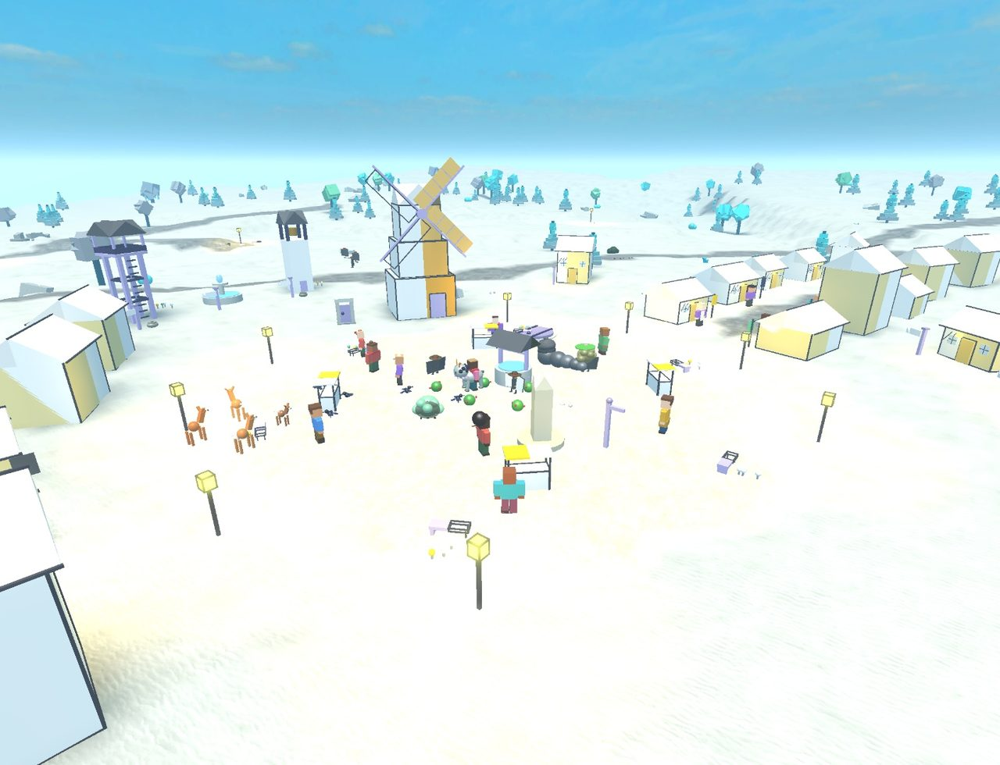
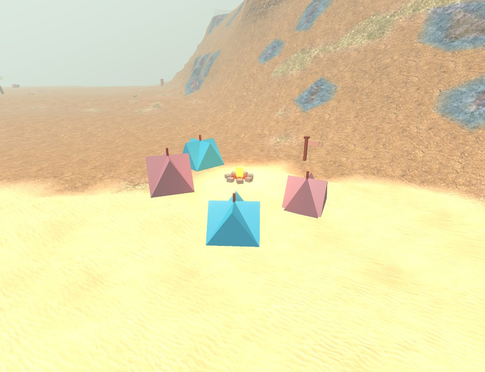

奇比兹年史
钟历0年始于北京时间10月19日06:32；世上一年，合现实3分钟；50年为一纪；现实一天为一个时代。
写于北京时间10月21日03:54。
现在是钟历907年。41片土地上（其中11片是钟点亮以后才发现的，都在所有地图的边外，访客还走不到），93个镇子、村子和营地里，住着1568个人。已经有17条习俗成了大家都守的规矩。下面每一行都是世界自己发生的。
眼看就要变的事
- 在雨阶井，给作品刻记号这件事离成为规矩最近：已走到约97%。
- 哨井坡和拱渠城从钟历903年起就为中间那片坡地争个不停，至今未休。
- 柳渡和礁堡峡湾之间那排石头，已经守了150年太平；守满120年、又一直有人敬着，就会成为规矩。
- 涨水河洲和铃浮岛之间那排石头，已经守了148年太平；守满120年、又一直有人敬着，就会成为规矩。
- 麻雀浮岛和荆浮岛从钟历907年起就为中间那片坡地争个不停，至今未休。
- 长牙寒原亲眼见过第十七纪的，只剩73岁的叶饼了。
- 荒野已经蔓到荆浮岛最后几户人家门口。
- 现在最年长的是雾村的米燕，83岁。
一纪一句话
- 第十九纪（进行中）：钟历900–907年：高原织城的吃食不够这么多种动物分，那里最后的垒石岩羊再也没出现过。
- 第十八纪：钟历850–899年：小暮走过了最后一片土地，又一直往前走，结果从另一头走回了拱渠城。原来世界是圆的。
- 第十七纪：钟历800–849年：在哨湾，现在谁做了东西，都会在旁边刻上自己的记号，老记号也总有人去刻深。他们管这叫“落个记号”。
- 第十六纪：钟历750–799年：在红树迷湾，现在谁做了东西，都会在旁边刻上自己的记号，老记号也总有人去刻深。他们管这叫“落个记号”。
- 第十五纪：钟历700–749年：在柳口，现在谁做了东西，都会在旁边刻上自己的记号，老记号也总有人去刻深。他们管这叫“石头说话”。
- 第十四纪：钟历650–699年：世上最后一只叠衣小马，再也没出现过。
- 第十三纪：钟历600–649年：铃浮岛成了一座镇子。
- 第十二纪：钟历550–599年：在盐阶，现在谁做了东西，都会在旁边刻上自己的记号，老记号也总有人去刻深。他们管这叫“记事石”。
- 第十一纪：钟历500–549年：在巨人后院，现在谁做了东西，都会在旁边刻上自己的记号，老记号也总有人去刻深。他们管这叫“落个记号”。
- 第十纪：钟历450–499年：划桨螃蟹都接上线了，整群搬进了礁堡峡湾。第一只走进来，已经是55年前的事了。
- 第九纪：钟历400–449年：说起张嘴石到底是谁弄出来的，鸣石谷的人各有各的说法，就分成了两拨。
- 第八纪：钟历350–399年：灯影水乡和萤池绿野已经没人记得萤菇坡地上那排石头是干什么的了，两边又争了起来。
- 第七纪：钟历300–349年：秋燕乘着芦苇风筝飞上去，在云里发现了绒苔云洲。
- 第六纪：钟历250–299年：萤阶剩下的几户人家收拾好东西，搬去绿琉璃城过日子了。萤阶空了下来。
- 第五纪：钟历200–249年：羽笔坳最后一户也搬走了，羽笔坳空了。
- 第四纪：钟历150–199年：汤泉坡已经没人记得0年到49年的事了。那些故事，没能传下来。
- 第三纪：钟历100–149年：杏杏走过了所有地图的尽头，发现了纸苔滩。
- 第二纪：钟历50–99年：炉边镇闹饥荒那年，巨人后院送去了一筐筐灯蕨。
- 第一纪：钟历0–49年：海藻深城为了该轮到谁敲钟分成了两拨。
- 钟前：世界先有了模样，后有了时间：先是炉边镇，再是周围的一片片土地，然后来了第一批访客，最后才有了自己的钟。
第三时代 · 10月20日
第十九纪 · 钟历900–907年（进行中）
北京时间10月21日03:32–03:56 · 共142件事 · 全部记录
钟历900–907年：高原织城的吃食不够这么多种动物分，那里最后的垒石岩羊再也没出现过。
- 钟历900年：蕨窝的阿饼又琢磨出了深陶土井，世上早就没人记得它了。
怎么来的（钟历574年）：世上再也没人记得深陶土井怎么做了。 - 钟历900年：蓟湖的人认定了：从涨水河洲来的那种怪花纹装篓回音？那是比谁的爷爷奶奶都老的东西。
怎么来的（钟历898年）：蓟湖的人开始琢磨从涨水河洲来的那种怪花纹装篓回音。 - 钟历900年：果蕾和小粟、阿榛一起，雕好了铃浮岛的果晴的雕像。
- 钟历901年：小浪带着5个人离开苜蓿浮岛坡，建起了炭浮岛。
- 钟历903年：漂渡办了第一届老石头节。
怎么来的（钟历903年）：漂渡的人认定了：那座谁也不记得是谁盖的老房子？那是很久以前栗毛弄的。 - 钟历903年：哨井坡和拱渠城已经没人记得萤菇坡地上那排石头是干什么的了，两边又争了起来。
怎么来的（钟历784年）：哨井坡和拱渠城在那片萤菇坡地上摆了一排石头：石头这边归一家，那边归另一家。 - 钟历905年：卵石渡剩下的几户人家收拾好东西，搬去荆湾过日子了。卵石渡空了下来。
- 钟历905年：洼浮岛已经变回了荒野。
怎么来的（钟历880年）：洼浮岛剩下的几户人家收拾好东西，搬去麻雀浮岛过日子了。洼浮岛空了下来。 - 钟历906年：躲了71年，纺锤云云洲的海边瞌睡画屋油灯又出来了。
怎么来的（钟历835年）：卵石浮岛一带的海边瞌睡画屋油灯躲起来了：那里的线稻草人，它们实在受不了。 - 钟历907年：高原织城的吃食不够这么多种动物分，那里最后的垒石岩羊再也没出现过。
怎么来的（钟历885年）：瞌睡折角纸鸟从回音霜云台来到了高原织城。 - 钟历907年：蕨窝的人现在知道那张老长椅是谁做的了：豆豆。不过汤泉坡的搬屑蚂蚁弄的的故事，大家还是爱讲着玩。
怎么来的（钟历907年）：棉汤擦掉蕨窝那张老长椅旁边石头上的青苔，认出了一个快磨平的记号：是豆豆做的。 - 钟历907年：鹭榛盖好了橡口的钟楼。
怎么来的（钟历462年）：壶浮岛的苔晴又琢磨出了芦苇稻草人，世上早就没人记得它了。 - 钟历907年：雾村再没人提栗秋从前那些闲话了：这些年，栗秋帮了好多邻居。
怎么来的（钟历881年）：雾村的人都说，栗秋像只小刺猬，不太好接近。 - 钟历907年：柚鼓把松羽线和蜜苇合在一起，做出了一样新东西：蛙鹭哨。蜜苇那空空的芯儿揉进了它里面，如今它能往里一吹就吹出一支小曲。它还能让花早早地开，还能在风里嗡嗡响。
怎么来的（钟历906年）：蓟湖的柚鼓把松羽线和蜜苇混在一起，想看看能做出什么。它有什么用，现在还没人知道。
第十八纪 · 钟历850–899年
北京时间10月21日01:02–03:32 · 共818件事 · 全部记录
钟历850–899年：小暮走过了最后一片土地，又一直往前走，结果从另一头走回了拱渠城。原来世界是圆的。
- 钟历851年：苗糕和鹭珠、小鹊一起，盖好了铃村的书屋。
怎么来的（钟历610年）：汤泉坡的柚沙又琢磨出了海藻字，世上早就没人记得它了。 - 钟历852年：捏陶珍珠鸡都接上线了，整群搬进了苇阶坡。第一只走进来，已经是52年前的事了。
怎么来的（钟历800年）：有一只捏陶珍珠鸡走进苇阶坡，在火边待了下来。 - 钟历852年：石柱台地的小绒又琢磨出了松根茶汤，世上早就没人记得它了。
怎么来的（钟历714年）：世上再也没人记得松根茶汤怎么做了。 - 钟历862年：环石丘的人现在知道那排老灯柱是谁立的了：燕竹。不过一件在找主人的失物的故事，大家还是爱讲着玩。
怎么来的（钟历862年）：小栗擦掉环石丘那排老灯柱旁边石头上的青苔，认出了一个快磨平的记号：是燕竹立的。 - 钟历864年：小冬雕好了柳渡的小冬的雕像。
怎么来的（钟历861年）：小冬灵机一动，在柳渡雕起了雕像，可那儿谁也没说过要。 - 钟历868年：麻雀寨的小棉在屋顶上风的歌声里，走完了长长的一生，那年70岁。
- 钟历870年：柳口的人认定了：从雨阶井来的那种怪山数阶井绳？那是这儿谁都还没出生的时候，哨湾的人弄的。
怎么来的（钟历857年）：柳口的人开始琢磨从雨阶井来的那种怪山数阶井绳。 - 钟历873年：红树迷湾再没人提柚雨从前那些闲话了：这些年，柚雨帮了好多邻居。
怎么来的（钟历853年）：红树迷湾的人都说，柚雨像只小刺猬，不太好接近。 - 钟历874年：小暮走过了最后一片土地，又一直往前走，结果从另一头走回了拱渠城。原来世界是圆的。
- 钟历881年：壶浮岛为了还要不要过奇事节分成了两拨。
怎么来的（钟历847年）：壶浮岛办了第一届奇事节。 - 钟历883年：在月蛾草甸，现在谁做了东西，都会在旁边刻上自己的记号，老记号也总有人去刻深。他们管这叫“石头说话”。
怎么来的（钟历865年）：禾禾把羽栗刻在小豆的雕像旁边的记号又刻深了些。两人从没见过面，是石头记着。 - 钟历889年：世上最后一只补丁盒，再也没出现过。
怎么来的（钟历868年）：躲了25年，炉边镇的小飘落风铃又出来了。 - 钟历890年：苇湖办了第一届书屋节。
怎么来的（钟历890年）：云铃和秋秋、毛苗、贝岩一起，盖好了苇湖的书屋。 - 钟历894年：回音嗡云洲的扬帆蜗牛变了好多，大家给它们起了新名字：小扬帆蜗牛。
怎么来的（钟历436年）：扬帆蜗牛从礁堡峡湾来到了回音嗡云洲。
第十七纪 · 钟历800–849年
北京时间10月20日22:32–10月21日01:02 · 共779件事 · 全部记录
钟历800–849年：在哨湾，现在谁做了东西，都会在旁边刻上自己的记号，老记号也总有人去刻深。他们管这叫“落个记号”。
- 钟历801年：豆湖办了第一届老房子节。
怎么来的（钟历801年）：豆湖的人认定了：漂阶那些空房子是谁盖的？那是星星在练习。 - 钟历804年：糕苗搬进了空荡荡的霜湖，生起了好多年来的第一炉火。
怎么来的（钟历801年）：霜湖剩下的几户人家收拾好东西，搬去柳渡过日子了。霜湖空了下来。 - 钟历804年：霜湖最后一户也搬走了，霜湖空了。
怎么来的（钟历786年）：芽粟离开霜湖，去了铃村。 - 钟历810年：洒墨铅笔都接上线了，整群搬进了草稿原。第一只走进来，已经是55年前的事了。
怎么来的（钟历755年）：有一只洒墨铅笔走进草稿原，在火边待了下来。
- 钟历811年：雾浮岛的糕暮又琢磨出了炭苜蓿谣，世上早就没人记得它了。
怎么来的（钟历791年）：世上再也没人记得炭苜蓿谣怎么做了。 - 钟历811年：云云和麦麦、小蝉一起，盖好了蓟湖的书屋。
怎么来的（钟历335年）：霜坳的阿菇发明了静菇谣。 - 钟历821年：世上最后一只排队蜂，再也没出现过。
怎么来的（钟历820年）：躲了62年，炉边镇的挥手麻雀又出来了。 - 钟历822年：在哨湾，现在谁做了东西，都会在旁边刻上自己的记号，老记号也总有人去刻深。他们管这叫“落个记号”。
怎么来的（钟历821年）：小秋把笛糖刻在观星台旁边的记号又刻深了些。两人从没见过面，是石头记着。 - 钟历824年：苗蝉盖好了柳渡的钟楼。
怎么来的（钟历793年）：哨井坡的阿月又琢磨出了羊毛稻草人，世上早就没人记得它了。 - 钟历831年：说起好多年没见过的扫雪木桶，失物海岸的人各有各的说法，就分成了两拨。
怎么来的（钟历803年）：关于好多年没见过的扫雪木桶，失物海岸的人又说不到一块儿去了。
他们不知道的是：失物海岸附近最后一次有人见到它们，是钟历290年。 - 钟历831年：毛暮带着4个人离开失物海岸，建起了雾井。
怎么来的（钟历831年）：说起好多年没见过的扫雪木桶，失物海岸的人各有各的说法，就分成了两拨。 - 钟历839年：羽笔寨为了人太多、地方太挤分成了两拨。

- 钟历844年：回音铃云台的装篓回音变了好多，大家给它们起了新名字：花纹装篓回音。
怎么来的（钟历570年）：装篓回音从纸苔滩来到了回音铃云台。 - 钟历845年：霜浮岛的人认定了：为什么唱过的歌，风会一直替你唱下去？那是很久以前星花弄的。
怎么来的（钟历809年）：霜浮岛的人开始琢磨为什么唱过的歌，风会一直替你唱下去。
他们不知道的是：在钟开始走以前，就是这样了。
第十六纪 · 钟历750–799年
北京时间10月20日20:02–22:32 · 共880件事 · 全部记录
钟历750–799年：在红树迷湾，现在谁做了东西，都会在旁边刻上自己的记号，老记号也总有人去刻深。他们管这叫“落个记号”。
- 钟历750年：苇阶坡的人认定了：好多年没见过的理贝水母？那是很久以前小风弄的。
怎么来的（钟历750年）：苇阶坡的人开始琢磨好多年没见过的理贝水母。
他们不知道的是：苇阶坡附近最后一次有人见到它们，是钟历725年。 - 钟历753年：手套渡为了还要不要过老石头节分成了两拨。
怎么来的（钟历727年）：手套渡办了第一届老石头节。 - 钟历753年：小风带着8个人离开手套渡，建起了雾窝。
怎么来的（钟历753年）：手套渡为了还要不要过老石头节分成了两拨。 - 钟历760年：在红树迷湾，现在谁做了东西，都会在旁边刻上自己的记号，老记号也总有人去刻深。他们管这叫“落个记号”。
怎么来的（钟历760年）：橙花擦掉红树迷湾那间老书屋旁边石头上的青苔，认出了一个快磨平的记号：是暮岩盖的。 - 钟历760年：卵石浮岛办了第一届老房子节。
怎么来的（钟历760年）：卵石浮岛的人认定了：苔浮岛那些空房子是谁盖的？那是一棵很老的树在回想。 - 钟历767年：压压纸鱼都接上线了，整群搬进了折纸原。第一只走进来，已经是106年前的事了。
怎么来的（钟历661年）：有一只压压纸鱼走进折纸原，在火边待了下来。 - 钟历770年：萤池绿野的萤萤又琢磨出了雀苇谣，世上早就没人记得它了。
怎么来的（钟历540年）：世上再也没人记得雀苇谣怎么做了。 - 钟历770年：回回和柳麦、月月一起，盖好了羽笔浮岛的书屋。
怎么来的（钟历221年）：拱渠城的岚冬发明了陶土字。 - 钟历776年：柳湖的人现在知道那排老灯柱是谁立的了：小麦。不过从地图边外来的旅人的故事，大家还是爱讲着玩。
怎么来的（钟历776年）：桃桃擦掉柳湖那排老灯柱旁边石头上的青苔，认出了一个快磨平的记号：是小麦立的。 - 钟历781年：荆浮岛把那片洼铃草坡地让给了哨湾，自己去更远的地方找。
怎么来的（钟历752年）：荆浮岛和哨湾都说，中间那片长着洼铃草的坡地是自己的。 - 钟历782年：粟粟搭好了雾窝的风筝塔。
怎么来的（钟历345年）：哨湾的燕蝉发明了钓鱼猴子风筝。 - 钟历786年：纺锤根云台的嘘嘘火花变了好多，大家给它们起了新名字：瞌睡嘘嘘火花。
怎么来的（钟历651年）：嘘嘘火花从石柱台地来到了纺锤根云台。 - 钟历793年：灯浮岛最后一户也搬走了，灯浮岛空了。
怎么来的（钟历793年）：沙栗带着8个人离开灯浮岛，建起了霜浮岛。 - 钟历795年：说起好多年没见过的放哨小象，沙浮岛的人各有各的说法，就分成了两拨。
怎么来的（钟历791年）：沙浮岛的人开始琢磨好多年没见过的放哨小象。
他们不知道的是：沙浮岛附近最后一次有人见到它们，是钟历777年。
第十五纪 · 钟历700–749年
北京时间10月20日17:32–20:02 · 共825件事 · 全部记录
钟历700–749年：在柳口，现在谁做了东西，都会在旁边刻上自己的记号，老记号也总有人去刻深。他们管这叫“石头说话”。
- 钟历700年：指路水獭都接上线了，整群搬进了苇浮岛。第一只走进来，已经是84年前的事了。
怎么来的（钟历616年）：有一只指路水獭走进苇浮岛，在火边待了下来。 - 钟历700年：萤窝办了第一届钟楼节。
怎么来的（钟历700年）：阿荷和糖毛、桃果一起，盖好了萤窝的钟楼。 - 钟历708年：灯影水乡为了还要不要过想念节分成了两拨。
怎么来的（钟历708年）：灯影水乡办了第一届想念节。 - 钟历711年：顶针霜浮岛的堆粮小虾变了好多，大家给它们起了新名字：花纹堆粮小虾。
怎么来的（钟历468年）：堆粮小虾从涨水河洲来到了顶针霜浮岛。 - 钟历711年：云云搭好了荆浮岛坡的风筝塔。
怎么来的（钟历112年）：茶杯营的阿星发明了芦苇风筝。 - 钟历718年：在柳口，现在谁做了东西，都会在旁边刻上自己的记号，老记号也总有人去刻深。他们管这叫“石头说话”。
怎么来的（钟历718年）：雀粟把小鼓刻在灯柱旁边的记号又刻深了些。两人从没见过面，是石头记着。 - 钟历721年：荆浮岛成了一座镇子。
怎么来的（钟历720年）：晴冬和晴秋一起，盖好了荆浮岛的晴冬家。 - 钟历721年：月浪和小沙一起，搭好了柳渡的风筝塔。
怎么来的（钟历268年）：风毡草原的饼饼发明了纸浮囊。 - 钟历722年：饼屑浮岛的团蕾又琢磨出了羽笔藤饼，世上早就没人记得它了。
怎么来的（钟历619年）：世上再也没人记得羽笔藤饼怎么做了。 - 钟历732年：小岚带着10个人离开风毡草原，建起了蜜庄。
怎么来的（钟历732年）：风毡草原为了多年的积怨分成了两拨。 - 钟历733年：说起好多年没见过的午睡乌龟，雾浮岛的人各有各的说法，就分成了两拨。
怎么来的（钟历729年）：关于好多年没见过的午睡乌龟，雾浮岛的人又说不到一块儿去了。
他们不知道的是：雾浮岛附近最后一次有人见到它们，是钟历442年。 - 钟历736年：哨井坡的阿枫水壶还在咕嘟咕嘟地唱，走完了暖暖的一辈子，那年77岁。
- 钟历740年：茶杯洼最后一户也搬走了，茶杯洼空了。
怎么来的（钟历739年）：阿莓离开茶杯洼，去了草稿原。 - 钟历741年：风毡草原的人认定了：从高原织城来的那种怪打呼石头？那是风毡草原的打鼓壁虎弄的。
怎么来的（钟历716年）：风毡草原的人开始琢磨从高原织城来的那种怪打呼石头。 - 钟历748年：在灯影水乡，现在谁做了东西，都会在旁边刻上自己的记号，老记号也总有人去刻深。他们管这叫“久久记着”。
怎么来的（钟历748年）：梅芽擦掉灯影水乡那座老码头旁边石头上的青苔，认出了一个快磨平的记号：是小叶修的。
第十四纪 · 钟历650–699年
北京时间10月20日15:02–17:32 · 共807件事 · 全部记录
钟历650–699年：世上最后一只叠衣小马，再也没出现过。
- 钟历650年：说起广场上那根褪了色的彩杆，草稿原的人各有各的说法，就分成了两拨。
怎么来的（钟历581年）：草稿原的人开始琢磨广场上那根褪了色的彩杆。
他们不知道的是：那是为老石头节立的；这个节，这里从钟历134年一直过到479年。 - 钟历650年：松鼓带着8个人离开草稿原，建起了饼屑坡。
怎么来的（钟历650年）：说起广场上那根褪了色的彩杆，草稿原的人各有各的说法，就分成了两拨。 - 钟历650年：灯浮岛的小岚又琢磨出了蜂蜜眼镜，世上早就没人记得它了。
怎么来的（钟历640年）：世上再也没人记得蜂蜜眼镜怎么做了。 - 钟历661年：饼屑浮岛的人认定了：那口谁也不记得是谁挖的老井？那是天生的老样子。
怎么来的（钟历661年）：饼屑浮岛的人开始琢磨那口谁也不记得是谁挖的老井。
他们不知道的是：那是小糕在钟历531年挖的。 - 钟历665年：回音嗡云洲的拉网海鸥变了好多，大家给它们起了新名字：小拉网海鸥。
怎么来的（钟历475年）：拉网海鸥从礁堡峡湾来到了回音嗡云洲。 - 钟历669年：绒营最后一户也搬走了，绒营空了。
怎么来的（钟历668年）：小笛离开绒营，去了豆浮岛。 - 钟历670年：蓟湖办了第一届想念节。
怎么来的（钟历670年）：蓟湖的人认定了：好多年没见过的赏月灯笼？那是比谁的爷爷奶奶都老的东西。 - 钟历671年：学声鼠兔都接上线了，整群搬进了霜庄。第一只走进来，已经是227年前的事了。
怎么来的（钟历444年）：有一只学声鼠兔走进霜庄，在火边待了下来。 - 钟历674年：饼屑浮岛的人现在知道那口老井是谁挖的了：小糕。不过天生的老样子的故事，大家还是爱讲着玩。
怎么来的（钟历674年）：柚蕾擦掉饼屑浮岛那口老井旁边石头上的青苔，认出了一个快磨平的记号：是小糕挖的。 - 钟历680年：饼屑浮岛坪为了多年的积怨分成了两拨。
- 钟历681年：阿星和小糖、小杏、阿杏一起，盖好了蓟湾的书屋。
怎么来的（钟历368年）：拱渠城的麦樱发明了灯蕨谣。 - 钟历684年：栗栗用羽笔藤和雀苇做的东西，现在大家都知道了：它叫松羽线，能在风里嗡嗡响，还能离地浮起一点点。
怎么来的（钟历677年）：炉边镇的栗栗把羽笔藤和雀苇混在一起，想看看能做出什么。它有什么用，现在还没人知道。 - 钟历684年：柳湖为了还要不要过远客节分成了两拨。
怎么来的（钟历400年）：柳湖办了第一届远客节。
- 钟历694年：世上最后一只叠衣小马，再也没出现过。
怎么来的（钟历693年）：躲了66年，炉边镇的山数阶井绳又出来了。 - 钟历696年：禾鼓垒好了折纸原的高观星台。
第十三纪 · 钟历600–649年
北京时间10月20日12:32–15:02 · 共747件事 · 全部记录
钟历600–649年：铃浮岛成了一座镇子。
- 钟历605年：刨土蜂鸟都接上线了，整群搬进了绿琉璃城。第一只走进来，已经是221年前的事了。
怎么来的（钟历384年）：有一只刨土蜂鸟走进绿琉璃城，在火边待了下来。 - 钟历606年：说起广场上那根褪了色的彩杆，壶坳的人各有各的说法，就分成了两拨。
怎么来的（钟历595年）：关于广场上那根褪了色的彩杆，壶坳的人又说不到一块儿去了。
他们不知道的是：那是为小戏台节立的；这个节，这里从钟历454年一直过到454年。 - 钟历606年：苇浮岛为了还要不要过想念节分成了两拨。
怎么来的（钟历483年）：苇浮岛办了第一届想念节。 - 钟历611年：糖糖带着5个人离开卵石浮岛，建起了苔浮岛。
- 钟历612年：苔浮岛的阿珠看着来来往往的船，走完了长长的一生，那年73岁。
- 钟历617年：铃浮岛成了一座镇子。
怎么来的（钟历616年）：阿鼓和阿柚一起，盖好了铃浮岛的阿鼓家。 - 钟历620年：梅浮岛的晨松又琢磨出了水钟，世上早就没人记得它了。
怎么来的（钟历251年）：月蛾草甸的云云发明了水钟。 - 钟历620年：小饼和小雀、羽羽一起，雕好了萤池绿野的小雀的雕像。
怎么来的（钟历221年）：拱渠城的岚冬发明了陶土字。 - 钟历627年：在萤窝，现在谁做了东西，都会在旁边刻上自己的记号，老记号也总有人去刻深。他们管这叫“久久记着”。
怎么来的（钟历613年）：阿雨把蝉杏刻在喷泉旁边的记号又刻深了些。两人从没见过面，是石头记着。 - 钟历629年：抹泥珍珠鸡都接上线了，整群搬进了环石丘。第一只走进来，已经是115年前的事了。
怎么来的（钟历514年）：有一只抹泥珍珠鸡走进环石丘，在火边待了下来。
- 钟历631年：灯浮岛的人认定了：好多年没见过的盘绳箱子？那是从地图边外来的旅人。
怎么来的（钟历595年）：灯浮岛的人开始琢磨好多年没见过的盘绳箱子。
他们不知道的是：灯浮岛附近最后一次有人见到它们，是钟历573年。 - 钟历633年：莓莓垒好了壶浮岛的观星台。
怎么来的（钟历620年）：莓莓离开猴面包树原，去了壶浮岛。 - 钟历636年：极光静原再没人提团岚从前那些闲话了：这些年，团岚帮了好多邻居。
怎么来的（钟历629年）：团岚那些闲话，从风毡草原一路跟到了极光静原。 - 钟历641年：静庄办了第一届远客节。
怎么来的（钟历641年）：静庄的人认定了：从捕风绿洲来的那种怪山歪歪小狗？那是这儿谁都还没出生的时候，天气岗的人弄的。 - 钟历649年：纸苔滩的垒堤水纹变了好多，大家给它们起了新名字：长毛垒堤水纹。
怎么来的（钟历503年）：垒堤水纹从雨阶井来到了纸苔滩。
第十二纪 · 钟历550–599年
北京时间10月20日10:02–12:32 · 共709件事 · 全部记录
钟历550–599年：在盐阶，现在谁做了东西，都会在旁边刻上自己的记号，老记号也总有人去刻深。他们管这叫“记事石”。
- 钟历551年：雾村的星绿又琢磨出了蜂蜜饼，世上早就没人记得它了。
怎么来的（钟历189年）：草稿原的小团发明了蜂蜜饼。 - 钟历551年：壶坳办了第一届想念节。
怎么来的（钟历551年）：壶坳的人认定了：好多年没见过的打鼓壁虎？那是一棵很老的树在回想。 - 钟历554年：汤泉坡的人认定了：从月蛾草甸来的那种怪洒墨铅笔？那是这儿谁都还没出生的时候，礁堡峡湾的人弄的。
怎么来的（钟历529年）：汤泉坡的人开始琢磨从月蛾草甸来的那种怪洒墨铅笔。 - 钟历565年：说起从绿琉璃城来的那种怪守畦飞蛾，墨枝书城的人各有各的说法，就分成了两拨。
怎么来的（钟历523年）：关于从绿琉璃城来的那种怪守畦飞蛾，墨枝书城的人又说不到一块儿去了。 - 钟历565年：灯浮岛为了人太多、地方太挤分成了两拨。
- 钟历565年：草云盖好了月蛾草甸的书屋。
怎么来的（钟历221年）：拱渠城的岚冬发明了陶土字。 - 钟历570年：菇珠和灯灯一起，垒好了梅浮岛的观星台。
怎么来的（钟历565年）：菇珠离开哨湾，去了梅浮岛。 - 钟历576年：阿鹭乘着芦苇风筝飞上去，在云里发现了回音霜云台。
怎么来的（钟历112年）：茶杯营的阿星发明了芦苇风筝。 - 钟历576年：回音霜云台有条怪规矩：种下的东西，长得快一倍，谢得也快一倍。
怎么来的（钟历576年）：阿鹭乘着芦苇风筝飞上去，在云里发现了回音霜云台。 - 钟历580年：亮苔云洲的垒石海龟变了好多，大家给它们起了新名字：花纹垒石海龟。
怎么来的（钟历415年）：垒石海龟从拱渠城来到了亮苔云洲。 - 钟历581年：麻雀浮岛的冬枫看着来来往往的船，走完了长长的一生，那年84岁。
- 钟历585年：编藻河豚都接上线了，整群搬进了霜坳。第一只走进来，已经是187年前的事了。
怎么来的（钟历398年）：有一只编藻河豚走进霜坳，在火边待了下来。 - 钟历589年：潜潭猴子都接上线了，整群搬进了萤池绿野。第一只走进来，已经是197年前的事了。
怎么来的（钟历392年）：有一只潜潭猴子走进萤池绿野，在火边待了下来。
- 钟历594年：绒云带着12个人离开壶浮岛，建起了豆浮岛。
怎么来的（钟历594年）：壶浮岛为了人太多、地方太挤分成了两拨。 - 钟历595年：在盐阶，现在谁做了东西，都会在旁边刻上自己的记号，老记号也总有人去刻深。他们管这叫“记事石”。
怎么来的（钟历594年）：阿岚擦掉盐阶那座老观星台旁边石头上的青苔，认出了一个快磨平的记号：是芽芽垒的。
第二时代 · 10月19日
第十一纪 · 钟历500–549年
北京时间10月20日07:32–10:02 · 共662件事 · 全部记录
钟历500–549年：在巨人后院，现在谁做了东西，都会在旁边刻上自己的记号，老记号也总有人去刻深。他们管这叫“落个记号”。
- 钟历501年：炉边镇的人认定了：好多年没见过的浮浮帽子？那是这儿谁都还没出生的时候，茶杯坡的人弄的。
怎么来的（钟历498年）：炉边镇的人开始琢磨好多年没见过的浮浮帽子。
他们不知道的是：炉边镇附近最后一次有人见到它们，是钟历466年。 - 钟历506年：绒营为了多年的积怨分成了两拨。
- 钟历509年：漂漂船桨都接上线了，整群搬进了红树迷湾。第一只走进来，已经是43年前的事了。
怎么来的（钟历466年）：有一只漂漂船桨走进红树迷湾，在火边待了下来。 - 钟历510年：阿云搭好了梅浮岛的风筝塔。
怎么来的（钟历45年）：失物海岸的小鼓发明了打转螃蟹风筝。 - 钟历510年：茶杯洼办了第一届想念节。
怎么来的（钟历510年）：茶杯洼的人认定了：好多年没见过的晕色墨水瓶？那是风在闹着玩。 - 钟历513年：萤池绿野的穿桥小狗变了好多，大家给它们起了新名字：花纹穿桥小狗。
怎么来的（钟历376年）：穿桥小狗从灯影水乡来到萤池绿野，住进了挂灯泥鳅空出来的地方。 - 钟历521年：说起好多年没见过的扫雪木桶，失物海岸的人各有各的说法，就分成了两拨。
怎么来的（钟历496年）：关于好多年没见过的扫雪木桶，失物海岸的人又说不到一块儿去了。
他们不知道的是：失物海岸附近最后一次有人见到它们，是钟历290年。 - 钟历521年：糕失带着5个人离开失物海岸，建起了羽笔庄。
怎么来的（钟历521年）：说起好多年没见过的扫雪木桶，失物海岸的人各有各的说法，就分成了两拨。 - 钟历525年：茶燕和柚云一起，盖好了麻雀寨的书屋。
怎么来的（钟历132年）：墨枝书城的小云发明了贝壳字。 - 钟历533年：阿莓乘着洗洗小兔风筝飞上去，在云里发现了倒嗡云洲。
怎么来的（钟历136年）：天气岗的石石发明了洗洗小兔风筝。 - 钟历533年：倒嗡云洲有条怪规矩：唱过的歌，风会一直替你唱下去。
怎么来的（钟历533年）：阿莓乘着洗洗小兔风筝飞上去，在云里发现了倒嗡云洲。 - 钟历536年：橡浮岛的晴糕在屋顶上风的歌声里，走完了长长的一生，那年69岁。
- 钟历544年：茶杯坡的小饼又琢磨出了线风筝，世上早就没人记得它了。
怎么来的（钟历451年）：世上再也没人记得线风筝怎么做了。 - 钟历549年：在巨人后院，现在谁做了东西，都会在旁边刻上自己的记号，老记号也总有人去刻深。他们管这叫“落个记号”。
怎么来的（钟历549年）：后后把小暮刻在红码头旁边的记号又刻深了些。两人从没见过面，是石头记着。
第十纪 · 钟历450–499年
北京时间10月20日05:02–07:32 · 共662件事 · 全部记录
钟历450–499年：划桨螃蟹都接上线了，整群搬进了礁堡峡湾。第一只走进来，已经是55年前的事了。
- 钟历450年：石石和柳果一起，垒好了月蛾草甸的观星台。
- 钟历453年：划桨螃蟹都接上线了，整群搬进了礁堡峡湾。第一只走进来，已经是55年前的事了。
怎么来的（钟历398年）：有一只划桨螃蟹走进礁堡峡湾，在火边待了下来。 - 钟历454年：小岩带着7个人离开卵石渡，建起了壶坳。
怎么来的（钟历454年）：卵石渡为了人太多、地方太挤分成了两拨。 - 钟历460年：云阶茶山的柚柚又琢磨出了羊毛长梯，世上早就没人记得它了。
怎么来的（钟历446年）：世上再也没人记得羊毛长梯怎么做了。 - 钟历461年：灯影水乡的画图小雾变了好多，大家给它们起了新名字：山画图小雾。
怎么来的（钟历355年）：画图小雾从萤池绿野来到灯影水乡，住进了发光蜂鸟空出来的地方。 - 钟历462年：雾浮岛的鼓鼓开着窗，听着风，走完了长长的一生，那年64岁。
- 钟历473年：风毡草原的人认定了：好多年没见过的扫地白貂？那是很久以前阿铃弄的。
怎么来的（钟历467年）：风毡草原的人开始琢磨好多年没见过的扫地白貂。
他们不知道的是：风毡草原附近最后一次有人见到它们，是钟历445年。 - 钟历476年：阿月搬进了空荡荡的蓟湖，生起了好多年来的第一炉火。
怎么来的（钟历476年）：蓟湾为了还要不要过奇事节分成了两拨。 - 钟历476年：环石丘和涨水河洲已经没人记得雾小梅地上那排石头是干什么的了，两边又争了起来。
怎么来的（钟历400年）：雾小梅地又挤起来了，环石丘和涨水河洲没吵，指了指那排老石头，事儿就过去了。 - 钟历480年：柳湖办了第一届奇事节。
怎么来的（钟历480年）：柳湖的人认定了：雨伞树到底是谁弄出来的？那是比谁的爷爷奶奶都老的东西。 - 钟历482年：躲了67年，猴面包树原的泡泥狐獴又出来了。
怎么来的（钟历415年）：盐阶一带的泡泥狐獴躲起来了：那里的羊毛稻草人，它们实在受不了。 - 钟历485年：哨浮岛为了人太多、地方太挤分成了两拨。
- 钟历494年：阿鼓乘着打转螃蟹风筝飞上去，在云里发现了纺锤根云台。
怎么来的（钟历45年）：失物海岸的小鼓发明了打转螃蟹风筝。 - 钟历494年：纺锤根云台有条怪规矩：老人在梦里变年轻，醒来更聪明。
怎么来的（钟历494年）：阿鼓乘着打转螃蟹风筝飞上去，在云里发现了纺锤根云台。
第九纪 · 钟历400–449年
北京时间10月20日02:32–05:02 · 共586件事 · 全部记录
钟历400–449年：说起张嘴石到底是谁弄出来的，鸣石谷的人各有各的说法，就分成了两拨。
- 钟历403年：鸣石谷的滴答风袋变了好多，大家给它们起了新名字：夜滴答风袋。
怎么来的（钟历197年）：滴答风袋从天气岗来到了鸣石谷。 - 钟历409年：说起张嘴石到底是谁弄出来的，鸣石谷的人各有各的说法，就分成了两拨。
怎么来的（钟历395年）：鸣石谷的人开始琢磨张嘴石到底是谁弄出来的。
他们不知道的是：在钟开始走以前，它就在那儿了。 - 钟历409年：小云带着9个人离开鸣石谷，建起了霜庄。
怎么来的（钟历409年）：说起张嘴石到底是谁弄出来的，鸣石谷的人各有各的说法，就分成了两拨。 - 钟历410年：卵石渡办了第一届远客节。
怎么来的（钟历410年）：卵石渡的人认定了：从捕风绿洲来的那种怪垒石狐狸？那是雨阶井的刷沙扇子弄的。 - 钟历416年：纺锤云云洲有条怪规矩：这里的石头每年都长大一点。
怎么来的（钟历416年）：小芽乘着搬屑蚂蚁风筝飞上去，在云里发现了纺锤云云洲。 - 钟历419年：豆湖的人现在知道那口老井是谁挖的了：夏竹。不过这儿谁都还没出生的时候，风毡草原的人弄的的故事，大家还是爱讲着玩。
怎么来的（钟历419年）：阿果擦掉豆湖那口老井旁边石头上的青苔，认出了一个快磨平的记号：是夏竹挖的。 - 钟历421年：躲了61年，萤池绿野的补桥乌龟又出来了。
怎么来的（钟历360年）：萤池绿野一带的补桥乌龟躲起来了：那里的芦苇风筝，它们实在受不了。 - 钟历422年：阿贝和阿雨、竹包一起，搭好了盐阶的风筝塔。
怎么来的（钟历278年）：石柱台地的豆豆发明了汽浮囊。 - 钟历425年：羽笔浮岛为了人太多、地方太挤分成了两拨。
怎么来的（钟历414年）：小晨离开礁堡峡湾，去了羽笔浮岛。 - 钟历430年：海藻深城的糖毛又琢磨出了毡地图，世上早就没人记得它了。
怎么来的（钟历152年）：鸣石谷的桃桃发明了毡地图。 - 钟历432年：洼坡剩下的几户人家收拾好东西，搬去玫瑰峡城过日子了。洼坡空了下来。
- 钟历433年：墨枝书城的人认定了：从绿琉璃城来的那种怪守畦飞蛾？那是墨枝书城的摆摊陶罐弄的。
怎么来的（钟历421年）：墨枝书城的人开始琢磨从绿琉璃城来的那种怪守畦飞蛾。 - 钟历443年：柳棉搭好了红树迷湾的风筝塔。
怎么来的（钟历201年）：捕风绿洲的樱樱发明了纸浮囊。 - 钟历445年：有一只扬帆蜗牛走进退潮滩，在火边待了下来。
怎么来的（钟历39年）：风毡草原的团团发明了豆豆茶汤。
- 钟历446年：小燕乘着纸浮囊飞上去，在云里发现了顶针霜浮岛。
怎么来的（钟历268年）：风毡草原的饼饼发明了纸浮囊。
第八纪 · 钟历350–399年
北京时间10月20日00:02–02:32 · 共542件事 · 全部记录
钟历350–399年：灯影水乡和萤池绿野已经没人记得萤菇坡地上那排石头是干什么的了，两边又争了起来。
- 钟历354年：拱渠城一带的歇脚猫头鹰躲起来了：那里的打转螃蟹风筝，它们实在受不了。
- 钟历356年：苔坡为了还要不要过地板嗡嗡节分成了两拨。
- 钟历356年：蕾蕾带着4个人离开苔坡，建起了萤寨。
- 钟历360年：涨水河洲的人认定了：好多年没见过的摇铃毛驴？那是从地图边外来的旅人。
他们不知道的是：涨水河洲附近最后一次有人见到它们，是钟历306年。 - 钟历362年：环石丘的浪浪又琢磨出了深陶土井，世上早就没人记得它了。
- 钟历365年：鹊贝和珠珠一起，垒好了橡口的观星台。
- 钟历370年：蕨寨为了还要不要过老石头节分成了两拨。

- 钟历372年：麦樱乘着打转螃蟹风筝飞上去，在云里发现了亮苔云洲。
- 钟历372年：亮苔云洲有条怪规矩：这里的河绕着圈慢慢流。
- 钟历375年：灯影水乡和萤池绿野已经没人记得萤菇坡地上那排石头是干什么的了，两边又争了起来。
- 钟历380年：有一只接雪松雀走进沙湖，在火边待了下来。
- 钟历380年：草稿原办了第一届书屋节。
- 钟历388年：巨人后院再没人提糖禾从前那些闲话了：这些年，糖禾帮了好多邻居。
- 钟历391年：墨枝书城的泡泥狐獴变了好多，大家给它们起了新名字：山泡泥狐獴。
怎么来的（钟历256年）：泡泥狐獴从猴面包树原来到了墨枝书城。 - 钟历399年：雀窝最后一户也搬走了，雀窝空了。
怎么来的（钟历398年）：小芽离开雀窝，去了红树迷湾。
第七纪 · 钟历300–349年
北京时间10月19日21:32–10月20日00:02 · 共495件事 · 全部记录
钟历300–349年：秋燕乘着芦苇风筝飞上去，在云里发现了绒苔云洲。
- 钟历301年：珠天雕好了天气岗的蝉蝉的雕像。
- 钟历302年：阿瑰带着5个人离开雀窝，建起了雀坳。
- 钟历305年：手套渡为了还要不要过书屋节分成了两拨。

- 钟历317年：环石丘再没人提菇春从前那些闲话了：这些年，菇春帮了好多邻居。
- 钟历318年：小鹭和小苗、小樱、雪樱一起，盖好了海藻深城的书屋。
- 钟历319年：秋燕乘着芦苇风筝飞上去，在云里发现了绒苔云洲。
- 钟历328年：高原织城的阿鹊又琢磨出了纸浮囊，世上早就没人记得它了。
- 钟历328年：野地一直长到了拱渠城最外头的房子边上，蘸水木桶也跟着来了。
- 钟历329年：环石丘的飘落风铃变了好多，大家给它们起了新名字：小飘落风铃。
- 钟历330年：霜坳的人认定了：那座谁也不记得是谁修的老码头？那是从前住在这里的巨人。
他们不知道的是：那是榛榛在钟历206年修的。 - 钟历331年：追光雪橇从极光静原来到风毡草原，住进了滑冰鼠兔空出来的地方。
- 钟历335年：铃井的秋秋水壶还在咕嘟咕嘟地唱，走完了暖暖的一辈子，那年75岁。
- 钟历341年：猴面包树原办了第一届小戏台节。
- 钟历344年：绒铃云洲有条怪规矩：发出的每一声，都会在第二天传回来。
第六纪 · 钟历250–299年
北京时间10月19日19:02–21:32 · 共441件事 · 全部记录
钟历250–299年：萤阶剩下的几户人家收拾好东西，搬去绿琉璃城过日子了。萤阶空了下来。
- 钟历251年：沙湖从一片营地长成了村子。
- 钟历256年：长牙寒原的糖雨又琢磨出了琉璃铃，世上早就没人记得它了。
- 钟历256年：阿樱和榛风、岩团、绒绒一起，盖好了茶杯洼的书屋。
- 钟历262年：蓟湾的人认定了：好多年没见过的打水小雀？那是一棵很老的树在回想。
- 钟历264年：柳湖的小桃在一个安静的晚上守着炉火，走完了暖暖的一辈子，那年72岁。
- 钟历265年：萤阶剩下的几户人家收拾好东西，搬去绿琉璃城过日子了。萤阶空了下来。
- 钟历276年：长牙寒原已经没人记得0年到49年的事了。那些故事，没能传下来。
- 钟历278年：阿燕擦掉鸣石谷那尊老雕像旁边石头上的青苔，认出了一个快磨平的记号：是小浪雕的。
- 钟历278年：阿叶雕好了雨阶井的米米的雕像。
- 钟历283年：灯影水乡办了第一届小戏台节。
- 钟历283年：梳毛小羊跑进环石丘找洼蓟吃。
- 钟历289年：风毡草原的守畦飞蛾变了好多，大家给它们起了新名字：瞌睡守畦飞蛾。
- 钟历290年：萤阶已经变回了荒野。
- 钟历299年：风麦带着4个人离开猴面包树原，建起了沙庄。
第五纪 · 钟历200–249年
北京时间10月19日16:32–19:02 · 共422件事 · 全部记录
钟历200–249年：羽笔坳最后一户也搬走了，羽笔坳空了。
- 钟历201年：萤池绿野办了第一届钟楼节。

- 钟历203年：饼柳带着5个人离开萤阶，建起了萤窝。
- 钟历206年：毛晴离开月蛾草甸去了退潮滩，想找个没人听过那些闲话的地方，重新开始。
- 钟历210年：橡口的人认定了：好多年没见过的数船水獭？那是从前住在这里的巨人。
- 钟历213年：失物海岸为了往左歪了一巴掌的篱笆分成了两拨。
- 钟历215年：糕糕和阿榛、晨莓、樱鹊一起，盖好了汤泉坡的钟楼。
- 钟历224年：野地一直长到了灯影水乡最外头的房子边上，挂灯泥鳅也跟着来了。
- 钟历226年：羽笔坳最后一户也搬走了，羽笔坳空了。
- 钟历229年：柳笛盖好了长牙寒原的书屋。
- 钟历234年：橡口把那片柳苇坡地让给了礁堡峡湾，自己去更远的地方找。
- 钟历234年：礁堡峡湾的铃铃又琢磨出了海藻布，世上早就没人记得它了。
- 钟历235年：猴面包树原的歪歪小狗变了好多，大家给它们起了新名字：山歪歪小狗。
- 钟历242年：阿冬把柚麦刻在风茶的雕像旁边的记号又刻深了些。两人从没见过面，是石头记着。
- 钟历243年：折纸原的人把野地一路推回到了远处的田地外头。
第四纪 · 钟历150–199年
北京时间10月19日14:02–16:32 · 共389件事 · 全部记录
钟历150–199年：汤泉坡已经没人记得0年到49年的事了。那些故事，没能传下来。
- 钟历151年：阿柚和小笛、小羽一起，垒好了环石丘的观星台。
- 钟历158年：炉边镇总算把欠巨人后院的还上了，那些老话也就没人再说了。
- 钟历158年：小笛盖好了礁堡峡湾的书屋。
- 钟历160年：礁堡峡湾的人认定了：量了两遍的船到底是谁弄出来的？那是大地在说梦话。
- 钟历162年：雾村的荷鹭喝完最后一杯茶，过完了满满的一辈子，那年75岁。
- 钟历163年：极光静原和高原织城在那片铃苇坡地上摆了一排石头：石头这边归一家，那边归另一家。
- 钟历170年：巨人后院办了第一届远客节。
- 钟历171年：小豆给退潮滩和巨人后院劝和了：那片灯蕨坡地现在两边一起用，轮流摘。
- 钟历172年：萤池绿野把饥荒年欠巨人后院的那些筐，还上了。
- 钟历180年：追光雪橇跑进高原织城找雀苔吃。
- 钟历186年：礁堡峡湾和草稿原都说，中间那片长着茶杯豆的坡地是自己的。
- 钟历188年：石柱台地的珠晨又琢磨出了线稻草人，世上早就没人记得它了。
- 钟历191年：玫瑰峡城为了借走没还的梯子分成了两拨。
- 钟历195年：汤泉坡已经没人记得0年到49年的事了。那些故事，没能传下来。
第三纪 · 钟历100–149年
北京时间10月19日11:32–14:02 · 共403件事 · 全部记录
钟历100–149年：杏杏走过了所有地图的尽头，发现了纸苔滩。
- 钟历107年：苔坡的小梅在最后那炉火边，走完了暖暖的一辈子，那年82岁。
- 钟历109年：杏杏走过了所有地图的尽头，发现了纸苔滩。
- 钟历109年：纸苔滩有条怪规矩：掉下的东西，夜里会慢慢浮起来。
- 钟历110年：炉边镇的人认定了：从萤池绿野来的那种怪补桥乌龟？那是一棵很老的树在回想。
- 钟历111年：玫瑰峡城为了雨是不是故意湿的分成了两拨。
- 钟历112年：拱渠城闹饥荒那年，石柱台地送去了一筐筐柳豆。
- 钟历123年：风毡草原把饥荒年欠高原织城的那些筐，还上了。
- 钟历124年：漂漂鳗鱼跑进月蛾草甸找羽笔藤吃。
- 钟历126年：贝铃盖好了风毡草原的书屋。
- 钟历130年：巨人后院办了第一届钟楼节。
- 钟历132年：巨人后院的人到现在还说，炉边镇欠的那些筐一直没还。
- 钟历132年：海藻深城发了大水，一个月才退。
- 钟历140年：荷鹭带着9个人离开红树迷湾，建起了雾村。
- 钟历140年：冬月和蝉月、雀雀、小春一起，盖好了雀窝的书屋。
第二纪 · 钟历50–99年
北京时间10月19日09:02–11:32 · 共380件事 · 全部记录
钟历50–99年：炉边镇闹饥荒那年，巨人后院送去了一筐筐灯蕨。
- 钟历53年：退潮滩为了跑进菜园的山羊分成了两拨。
- 钟历53年：岚岚垒好了捕风绿洲的观星台。
- 钟历53年：大家开始叫叶叶“开村的叶叶”。
- 钟历60年：墨枝书城办了第一届老石头节。
- 钟历61年：墨枝书城发了大水，一个月才退。
- 钟历68年：海藻深城已经没人记得那座观星台是谁垒的了。
- 钟历72年：炉边镇闹饥荒那年，巨人后院送去了一筐筐灯蕨。
- 钟历75年：阿粟和阿云、鹊暮一起，垒好了草稿原的观星台。
- 钟历75年：退潮滩的没盖完的喷泉塌了。
- 钟历80年：极光静原的苔苔走完了长长的一生，一首歌还唱到一半，那年87岁。
- 钟历83年：折纸原一整个夏天都没下雨。
- 钟历84年：阿禾带着9个人离开捕风绿洲，建起了麻雀寨。
- 钟历90年：手套渡的人认定了：夜里在山上挪来挪去的那团光？那是风在闹着玩。
- 钟历93年：系绳鱼儿跑进红树迷湾找雀苔吃。
第一时代 · 10月18日
第一纪 · 钟历0–49年
北京时间10月19日06:32–09:02 · 共281件事 · 全部记录
钟历0–49年：海藻深城为了该轮到谁敲钟分成了两拨。
- 钟历2年：墨枝书城发了大水，一个月才退。
- 钟历6年：漂漂垒好了海藻深城的观星台。
- 钟历6年：绿琉璃城办了第一届小戏台节。
- 钟历10年：赛奇和咕嘟一起，垒好了萤池绿野的观星台。
- 钟历13年：海藻深城为了该轮到谁敲钟分成了两拨。
- 钟历13年：大家开始叫埃梅卡“开村的埃梅卡”。
- 钟历20年：石柱台地的蹦蹦走完了长长的一生，一首歌还唱到一半，那年64岁。
- 钟历20年：海藻深城一整个夏天都没下雨。
- 钟历22年：芽芽带着7个人离开雨阶井，建起了卵石渡。
- 钟历30年：绿琉璃城的人认定了：第一颗种子到底是谁弄出来的？那是从明天来的孩子。
- 钟历33年：拖柴野牛跑进长牙寒原找橡菇吃。
- 钟历33年：礁堡峡湾的人开始琢磨从汤泉坡来的那种怪挂灯野猪。
- 钟历43年：帕克斯一直想被人记住，真的做到了。
- 钟历47年：雨阶井的桃桃又琢磨出了羊毛稻草人，世上早就没人记得它了。
钟前
现实时间2026年10月4日至18日
- 北京时间10月19日06:32：世界的钟点亮了。从这一刻起，不管有没有人看，世界都按自己的年头过日子：现实里一小时，世界里二十年。
- 10月17–18日：炉边镇学会了打招呼：每个广场都有毛茸茸的小家伙，镇上的人第一次开口问好，还有一颗会醒来变成伙伴的种子。
- 10月17日：第一批访客来了，待了几分钟，发现没什么回应他们，就走了。世界又请四十八位想象中的访客排练了一遍，他们也都走了，原因一样。
- 10月10–14日：炉边镇周围一口气长出了近三十片土地，每片都有自己的镇子、居民、动物、植物和地标，连成一个没有边的圆世界。
- 10月5–9日：世界有了自己的规矩：怪物是要安抚的循环，家会等主人回来，路是人走出来的，愿望种在井边。
- 10月4–5日：炉边镇立了起来：一座围着大炉火的镇子，有井，有摊子，有最早的居民，还有田野里的小动物。
- 10月4日：旧世界“无骑士”被收作回忆，奇比兹在原地从零开始。
根据建造记录整理；日期是真的，个别事情的先后是大致排的。